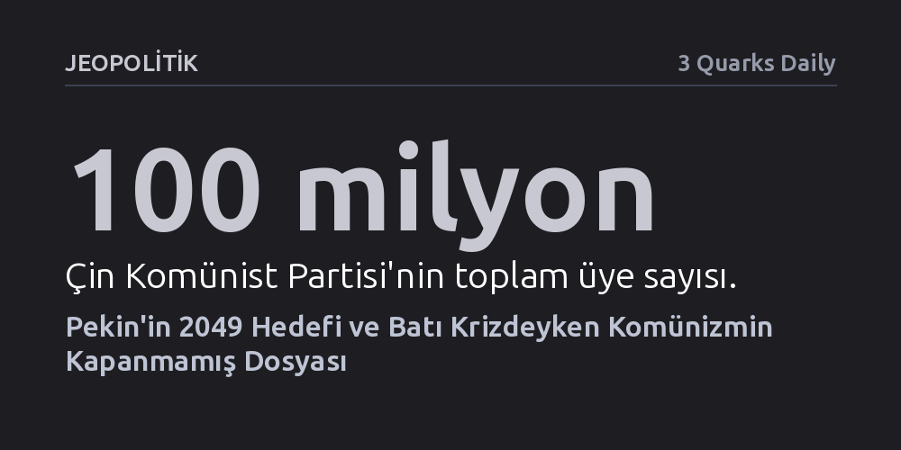

JEOPOLITIK · 3 Quarks Daily · 2026-10-27
Çin Komünist Partisi 2049'da dünyanın en güçlü devletini yönetme hedefiyle ilerlerken Batı'daki kapitalizm ve liberal demokrasi derin bir krizden geçiyor. Bu tablo, komünizmin tarihe karışmış bir geçmiş değil, küresel geleceği doğrudan şekillendiren bir güç olduğunu gösteriyor.
Komünizmi Soğuk Savaş'la kapanmış bir dosya sayma yanılgısını yıkarak, Batı krizdeyken Pekin'in küresel geleceği ve kuralları yeniden yazan başat güç haline geldiğini fark ettirir.

Dünyanın en başarılı ekonomisi bugün komünist bir parti tarafından idare ediliyor. Yaklaşık 100 milyon üyeye sahip olan Çin Komünist Partisi, yalnızca devasa bir bürokrasiyi yönetmekle kalmıyor; 2049 yılına gelindiğinde gezegenin tartışmasız en güçlü devletinin başında bulunmayı hedefliyor. Sovyetler Birliği’nin çöküşünün ardından Batı dünyasında hızla kabul gören "tarihin sonu" tezi ve liberal demokrasinin nihai zafer kazandığı varsayımı, Pekin’in bu kesintisiz yükselişi karşısında geçerliliğini tümüyle yitirmiş durumda.
Batılı gözlemcilerin Çin'in zenginleştikçe kaçınılmaz biçimde liberalleşeceği yönündeki beklentileri gerçekleşmedi. Aksine, piyasa mekanizmaları ile katı parti-devlet disiplinini harmanlayan bu model, küresel tedarik zincirlerinin merkezine yerleşerek ekonomik kudretini küresel bir siyasi ağırlığa dönüştürdü. Parti, gücünü salt üye sayısından değil, uzun vadeli stratejik planlama kabiliyetinden ve ekonomik performansı doğrudan rejim meşruiyetine tahvil edebilmesinden alıyor.
Akademik ve entelektüel çevrelerde Çin’in gerçek anlamda komünist olup olmadığı, mevcut düzenin Marksist temellerin kaba bir tahrifatı sayılıp sayılamayacağı sıklıkla tartışılıyor. Ancak somut jeopolitik gerçeklik karşısında bu teorik münakaşa giderek anlamını kaybediyor. Zira Çin Komünist Partisi planladığı doğrultuda 2049 hedeflerine ulaşırsa, siyasal ve ideolojik kavramların tanımlarını da bizzat kendisi belirleyecek ve tarih kitaplarını kendi anlatısıyla yazacaktır.
Küresel güç dengelerinin Doğu lehine büküldüğü bir vasatta, kimin "öz hakiki Marksist" olduğu yönündeki doktriner tartışmalar ikincil kalmaya mahkûmdur. Tarih boyunca yükselen hegemonik güçler, yalnızca askeri ve ticari üstünlük kurmakla yetinmemiş; meşruiyetin, kalkınmanın ve siyaset felsefesinin lügatini de yeniden inşa etmiştir. Dolayısıyla komünizmi geçmişte kalmış, günümüz tercihlerini ilgilendirmeyen kapalı bir fasıl gibi görmek büyük bir stratejik körlüktür.
Komünizmin tarihini ve bugünkü pratiklerini ciddiyetle incelemeyi zorunlu kılan bir diğer etken, bizzat Batı nizamının içine girdiği çok boyutlu krizdir. Günümüz dünyasına bakıldığında serbest piyasa kapitalizminin tıkandığı, liberal demokratik kurumların ise içten içe aşındığı açıkça görülüyor. İklim krizinin yarattığı şiddetli toplumsal gerilimler, aşırı gelir adaletsizliği ve geçmişin dinamik ülkelerinin sırtına binen ağır borç yükü, Batı kalkınma modelinin sürdürülebilirliğini kemiriyor.
Bütün bunlara ek olarak, üç kuşaktır hayal dahi edilemeyen nükleer savaş ihtimali, yeni jeopolitik fay hatlarının kırılmasıyla yeniden somut bir tehdit haline gelmiştir. Batı'nın refah ve güvenlik vaatleri sarsılırken, Pekin'in temsil ettiği otoriter ve merkeziyetçi kalkınma pratiği küresel ölçekte kaçınılmaz olarak daha fazla ağırlık kazanıyor. Bu nedenle komünizmle entelektüel temas kurmak nostaljik bir arayış değil; bugünün ve yarının krizlerinde önümüzde duran gerçek tercihleri anlamanın ön koşuludur.